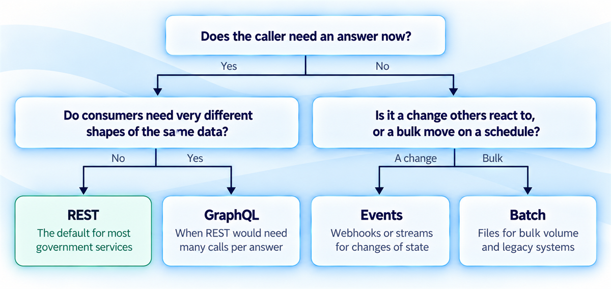
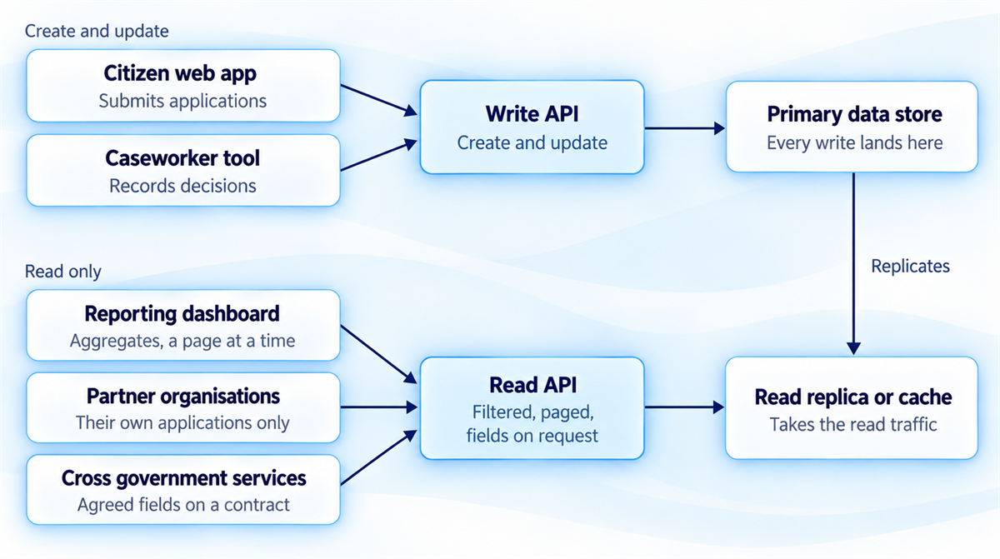
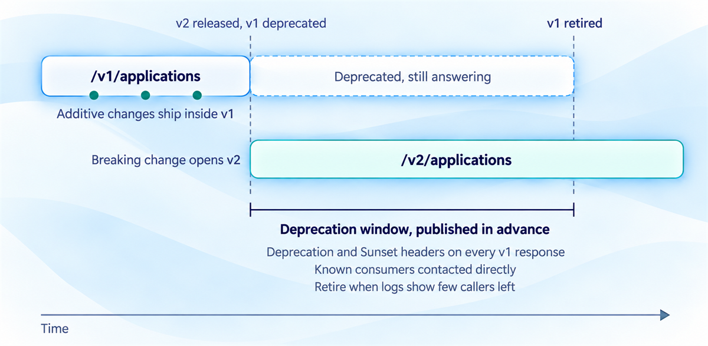
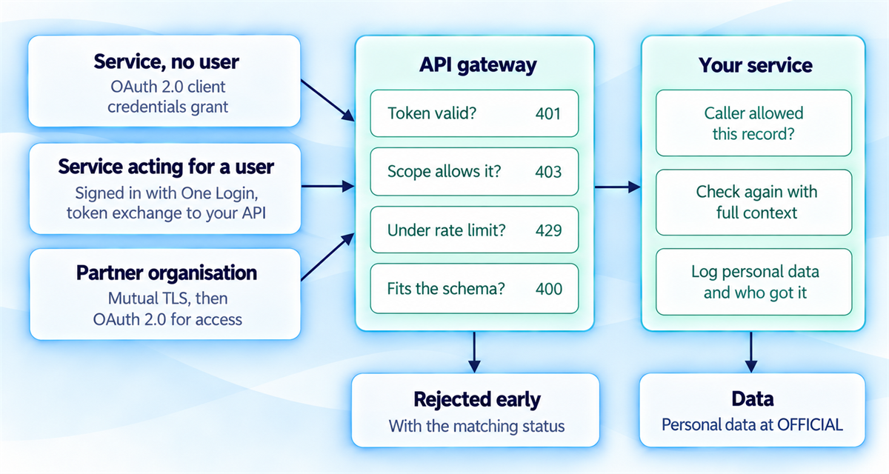
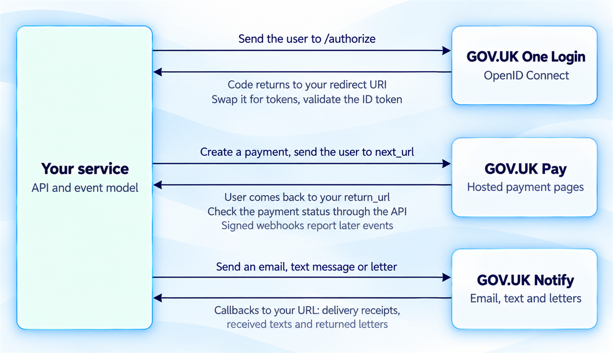

API strategy and design for government
Design APIs that stay reliable, serve many consumers and change without breaking them.
You'll come away with:
- What the GDS API technical and data standards ask for, and where they leave the choice to you
- How to choose between REST, events, GraphQL and batch for a government use case
- How to serve very different consumers from one API, and change it without breaking them
- How to secure an API in proportion to its data and fit it around One Login, Pay and Notify
Most exchanges between government services run through an API, from a frontend calling its own back end to one department checking another's records. Publish one and you have signed a contract with everyone who builds against it, including consumers you never knew were coming.
Why API design is a strategic decision
APIs carry the traffic between services inside a department, across departments, to shared platforms such as GOV.UK One Login and out to partners. Their design decides whether that traffic stays reliable and cheap to run, or becomes a steady supply of integration failures.
Once published, an API limits how your service can change, because every consumer has written code against its current shape. A well designed API attracts consumers nobody planned for. A badly designed one becomes technical debt that each of them inherits.
Government has a shared baseline. The GDS API technical and data standards cover how to design, build and operate an API, and point 4 of the Technology Code of Practice asks for open standards so technology can work with other technology. Follow the common conventions and your API feels familiar to anyone who has used another government API. Depart from them and every integration pays for it.
Other teams write code against your API. Change it carelessly and you break their service along with yours.
What the GDS standards ask for
Most of what the standards ask is ordinary good practice, written down so every department does the same ordinary things. A developer who has integrated with one government API should be able to pick up the next without starting again. The core fits on one page:
- Use the REST style, and turn off any HTTP method a resource does not support, so a record that can never be deleted does not accept DELETE.
- Name each type of resource consistently, such as /applications, and decide once whether collections are singular or plural, so developers can guess a name without rereading the documentation.
- Return JSON wherever possible. If your organisation has not already chosen a response format, the standards recommend JSON:API.
- Use TLS 1.2 or above to secure your API, which the standards make a must. Internal APIs are no exception under the NCSC's zero trust principle: don't trust any network, including your own.
- Control access with OAuth 2.0 and check scope on every request. Never use basic authentication, and avoid API keys.
- Describe the API in an OpenAPI document, which the Open Standards Board recommends for RESTful APIs, and write it before the code.
Errors need the same discipline. Match every response to a standard HTTP status code: 200 for success, 201 for something created, 400 for a malformed request, 401 when the caller has not authenticated, 403 when they have and still may not do this, 404 when nothing is there, 429 for a rate limit and 500 when the fault is yours. The classic offender is a 200 with an error in its body, which makes every client parse a success to discover a failure. The standards want error codes that are consistent and documented, and messages that tell an attacker nothing about your internals. A good error body carries a code, a sentence a developer can act on and, where possible, a hint about the fix.
The standards also ask for rate limiting or throttling, so no single consumer can exhaust the service. Over the limit, return 429 with a Retry-After header saying when to try again.
Choosing an API style
REST is the government default and, I have found, the right answer for most services. The GDS standards recommend it, while accepting that GraphQL or gRPC may suit specific projects better. The question is what kind of conversation the two systems need to have.
REST fits creating, reading, updating and deleting resources such as applications and cases, where the caller wants an answer straight away. Mainstream platforms and languages already speak it, which matters most for widely consumed APIs.

Event driven APIs, through webhooks or message streams, announce changes of state: an application submitted, a decision made, a payment taken. Nobody waits for a reply, and several consumers can react to one event without the publisher knowing who is listening. That loose coupling suits traffic between your own services and notifications across government.
GraphQL suits consumers that need very different slices of the same data, where REST would make them assemble each answer from many calls, and the standards note its value for prototyping when nobody yet knows what views other developers will want. I have seldom seen it in government, and the standards are written around REST, so the extra complexity needs a real reason.
Batch and file transfers still suit bulk movements with no need for real time, such as daily extracts and monthly reporting, and legacy systems that cannot call an API at all.
"Batch files are a legacy habit. A modern service should do everything through APIs."
Batch has its own job. Uploading 100,000 records as one file beats making 100,000 calls, for you and for whoever has to receive them.
Record the choice as an ADR. A departure from REST should say why the alternative serves this use case better, so the next architect does not have to reverse engineer your reasoning.
One API, many consumers
A government API rarely has only one consumer. A grant service might serve the citizen facing web application, the caseworker tool, a reporting dashboard, partner organisations checking grant status and other departments sharing data, each wanting different volumes, speeds and levels of detail.
The standards treat developers as the users of an API, so design from their side of the call: what does this consumer need, in what shape, to finish its task? The mistake I see most often runs the other way. An API that mirrors the database schema exposes your implementation and welds your tables to every consumer's code. The standards ask for resource names that stay stable between versions and an API that hides the data store beneath it.
Let consumers ask for less. With filtering and field selection, a mobile status view requests the status and nothing else, saving bandwidth and withholding data it had no reason to see. Page every collection with cursors or offsets and a sensible default size, because sooner or later a dashboard will ask for all 500,000 applications at once.

Where reads dominate, split them from writes. Dashboards and partner queries use a read optimised API backed by a replica or cache, while consumers that change data use a write API on the primary store. This is the CQRS pattern, and its practical effect is that the nine o'clock reporting run never competes with a caseworker saving a decision.
Then decide how formal each contract needs to be. A private API used only by your own frontend can change freely. A partner API serves known consumers on agreed terms. A public API, open to any government consumer, needs the most formal process of the three. The GDS standards apply to all of them.
Changing an API without breaking its consumers
Once an API is published, consumers depend on its exact shape, and changing it carelessly breaks things: sometimes catastrophically, always annoyingly. Start by knowing what counts as breaking.
Removing a field or endpoint breaks consumers. So does changing a field's type, making an optional field required, giving a field a new meaning under its old name or changing the format of error responses. Adding optional fields, endpoints or parameters breaks nobody, so those changes can ship inside the current version.
The standards ask you to avoid breaking changes where you can. Where you cannot, expose a new version with its number in the URI, /v1 then /v2. They prefer this to custom headers or media types, which proxies and firewalls can block, and want as few live versions as possible.

The standards set no fixed deprecation period, so publish your own and keep to it, allowing longer for an API many services depend on. Update the documentation, contact known consumers directly and return the Deprecation header on every old version response, adding the Sunset header once the retirement date is fixed. RFC 9745 and RFC 8594 define the two. Retire the old version when your logs show few callers left, and tell users it is no longer supported, which the standards make a requirement.
Adding to an API costs you a release. Taking something away costs every consumer one.
Keep the OpenAPI document current, since consumers generate client code and validate requests from it, and pair it with guides to getting started and authentication, error codes, rate limits and worked examples. For APIs consumed outside your team, put changes through a light governance step: propose, assess who is affected, tell them, deprecate and support the old version until the window closes. Changes that reach external consumers belong in your Design Authority reviews.
Security in proportion to the data
Security should match what an API exposes and who calls it. Open data needs far less protection than personal data held at OFFICIAL, which may also carry the OFFICIAL-SENSITIVE marking. The standards ask you to authenticate every caller and to keep any anonymous endpoint to open data, rate limited.
How a caller proves who it is depends on what it is. A service with no user involved uses the OAuth 2.0 client credentials grant for a short lived access token. Citizens sign in through GOV.UK One Login, which uses OpenID Connect and returns an ID token your service must validate. When a service then calls your API on that person's behalf, the standards point to token exchange (RFC 8693), and to the authorisation code flow with PKCE when a user calls the API directly. For a small, known community such as partner organisations, the NCSC suggests considering mutual TLS, which authenticates both ends of the connection, with OAuth 2.0 still deciding what each partner may do.

Authentication says who is calling. Authorisation decides what they may touch, and it is where the subtler failures live. Grant least privilege through granular scopes such as read:applications and read:decisions, checked on every request, as both the GDS standards and the NCSC ask. Scopes stop at the type of data, so for personal data add a check on the relationship between caller and record. A solicitor may read their client's case, and the scope that allows it must not open anyone else's.
Validate every input against a schema, checking types, ranges, formats and sizes, and reject attributes you did not expect. The NCSC adds that a gateway should handle basic checks without being the only place validation happens, so the service checks again with context the gateway lacks. Answer malformed requests with a 400 that explains the problem without describing how the system is built.
Rate limit each consumer, loosely enough for legitimate bursts and tightly enough to stop abuse, and log how often each one calls so a real surge can be told apart from an attack or a stolen credential. An API management platform or gateway carries much of this load, and the standards note it provides services you would rarely build yourself, such as access control, audit and logging. If the API returns personal or sensitive data, the standards say you must log when it was provided and to whom, which is what lets you answer a subject access request or trace a fraud.
Contract first, platforms from day one
The standards ask you to design the API before the user interface and make an OpenAPI document the first output of that design. With the contract written first, frontend and backend teams work in parallel against generated mocks, consumers start planning their integration at once, and automated tests hold the implementation to the contract from the first commit. Add a sandbox, behind authentication and free of real personal data, so consumers can try the API before production.
Check the UK API Catalogue at api.gov.uk before designing anything, because the standards ask you to reuse an existing API where one meets the need. Once yours is live, add it to that catalogue and your organisation's own. That is point 8 of the Technology Code of Practice, share, reuse and collaborate, in practice.
Shared platforms belong in the first sketch, because each sets a pattern your API has to fit. GOV.UK One Login returns an authorisation code to your redirect URI, which your service swaps for tokens before validating the ID token. GOV.UK Pay sends the user to a hosted payment page at next_url and back to your return_url, where your service checks the payment's status through the API before showing a result, with signed webhooks reporting later events such as refunds. GOV.UK Notify posts delivery receipts, received text messages and returned letters to a callback URL you provide, so your event model needs somewhere to put them.

Above all, be predictable. Use the same patterns for pagination, errors, authentication and naming as other government APIs, so a developer who knows one finds yours familiar on sight.
Developers may not read all of your documentation. Build an API they can guess correctly.
This guide is one practitioner's account of API strategy and design for UK government services, not official guidance. The styles, patterns and security approaches are teaching aids; the authoritative requirements are in the GDS, NCSC and platform sources below.
Last reviewed October 2026 against the government, NCSC, Open Standards and IETF sources below. Standards and platform details change, so check the source before relying on it.
- GDS: API technical and data standards
- GOV.UK: Technology Code of Practice
- Open Standards Board: Describing RESTful APIs with OpenAPI 3
- NCSC: Zero trust architecture design principles
- NCSC: API authentication and authorisation
- NCSC: Data in transit protection
- NCSC: Input validation
- GOV.UK: Government Security Classifications
- UK API Catalogue (api.gov.uk)
- GOV.UK One Login: Authenticate your user
- GOV.UK Pay: Making payments
- GOV.UK Pay: Webhooks
- GOV.UK Notify: Callbacks
- IETF: RFC 9745 (Deprecation header)
- IETF: RFC 8594 (Sunset header)
- IETF: RFC 8693 (OAuth 2.0 token exchange)